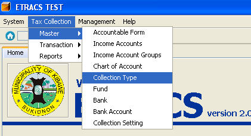
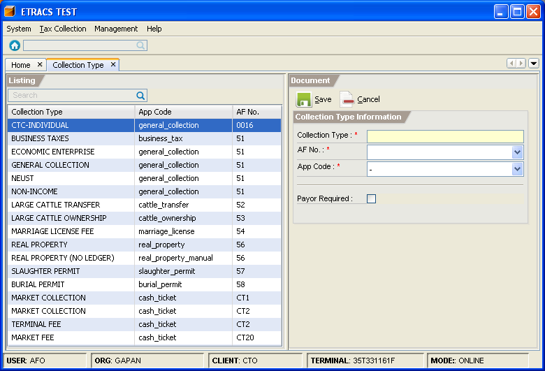
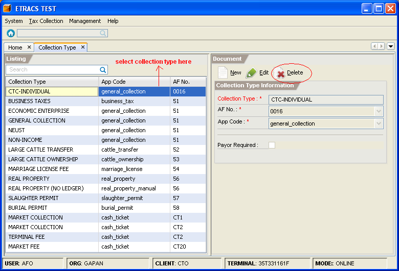

Managing Collection Types
This facility enables you to add, edit, and delete a collection type.
How to add a collection type?
1. On the menu toolbar, go to "Tax Collection -> Master -> Collection Type" item.

2. Click on the "New" button.
3. Fill in the collection type information.

4. Click on the "Save" button.
How to edit a collection type information?
1. Go to "Collection Type" page. (Please refer to Adding a Collection Type - Step 1)
2. Select the collection type item from the list, and click on the "Edit" button.

3. Modify the collection type information.
4. Click on the "Save" button.
How to delete a collection type?
1. Go to "Collection Type" page. (Please refer to Adding a Collection Type - Step 1)
2. Select the collection type item from the list, and click on the "Delete" button.
